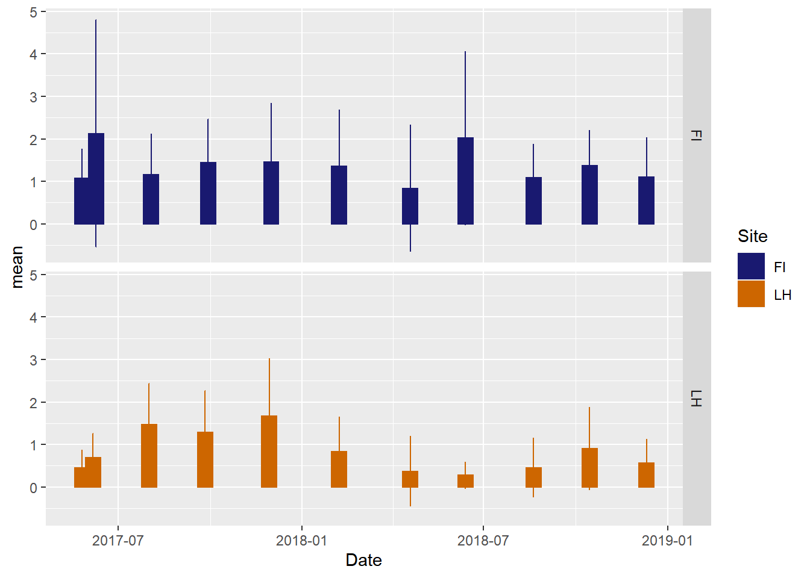

Chapter 3 Making Plots
3.0.1 Coding goals
We will learn the basics of R as we generate a series of plots. These plots will be based on a real data set produced in our office for the Delta Smelt Resiliency Strategy Aquatic Weed Control Action
3.0.2 Study overview
The purpose of this two-year study was to use herbicides to remove invasive aquatic vegetation from potential habitat for endangered delta smelt. In this experiment there were two treated sites and two untreated reference sites. We monitored many aspects of the ecosystem to document changes in response to the herbicide applications. We have data for vegetation biomass and species composition as well as water quality, phytoplankton, zooplankton, and fishes. For now, we will just focus on the vegetation biomass data.
3.0.3 Metadata for data set
Description of columns in vegetation biomass data set.
date: Date a sample was collected rounded to the nearest month, so the data are plotted by survey month instead of exact date.
site: Study sites in the North Delta. Little Hasting (LH) was treated with herbicides to remove aquatic weeds. French Island (FI) is a site near LH that is similar in many ways but remained untreated.
rake_no: Samples of aquatic vegetation were collected using a long-handled thatch rake. There were 20-40 samples collected for each site x date combination.
mass_kg: Total wet biomass of aquatic vegetation collected from a rake sample.
3.0.4 Helpful resources
R for Data Science: This is the primary source for learning how to use the tidyverse packages. Also this whole book was created using RMarkdown! I’ll just refer to it as RDS in the lessons below.
3.0.5 Initial set up
3.0.5.1 Install and load required packages
For the exercises, you’ll need the “tidyverse” which is a suite of packages that are useful for data science, and the “lubridate” package, which is handy for formatting dates.
Packages only need to be installed once, which is why the code to do that is now commented out with the ‘#’
Make sure the names of the packages are in quotes, or the code won’t work.
You will need to load the packages you want to use during every session using the library() function. As you load the packages, you’ll get some warnings and other notifications. It’s good to take a look at them, but most of the time, you don’t need to worry about them. I turned off printing of messages and warning in my markdown, so you won’t see them below.
#install.packages("lubridate")
#install.packages("tidyverse")
library(lubridate)
library(tidyverse)Note: Packages can also be installed from the “Packages” tab in the lower right pane.
3.0.5.2 Read the data set into R
It is often easiest to import data into R as a comma delimited file, which involves using the read.csv() function. You can import data from other types of files too, but the import function will be a little different.
The data set we will use is published on the Environmental Data Initiative website, so we can read it using the link to the csv file.
veg_data<-read.csv("https://portal.edirepository.org/nis/dataviewer?packageid=edi.1079.1&entityid=f29d1162866d4e9fb2fdd7355efd4c1e")3.0.5.3 Examine the structure of the data set
The str() function will show you some useful information about each column including what type of column it is.
str(veg_data)## 'data.frame': 876 obs. of 16 variables:
## $ Site : chr "DI" "DI" "DI" "DI" ...
## $ Site_Type : chr "Treated" "Treated" "Treated" "Treated" ...
## $ Date : chr "2017-05-25" "2017-06-07" "2017-06-07" "2017-05-25" ...
## $ Survey_Month : chr "2017_06" "2017_06" "2017_06" "2017_06" ...
## $ Latitude : num 38.1 38.1 38.1 38.1 38.1 ...
## $ Longitude : num -122 -122 -122 -122 -122 ...
## $ Total_Wet_Biomass_kg : num 0 0 0 0.0055 0.17 0.284 0.304 0.446 0.51 0.518 ...
## $ Egeria_densa : int 0 0 0 50 90 100 100 100 100 100 ...
## $ Elodea_canadensis : int 0 0 0 0 0 0 0 0 0 0 ...
## $ Ceratophyllum_demersum: int 0 0 0 50 0 0 0 0 0 0 ...
## $ Potamogeton_crispus : int 0 0 0 0 0 0 0 0 0 0 ...
## $ Myriophyllum_spicatum : int 0 0 0 0 0 0 0 0 0 0 ...
## $ Stuckenia_pectinata : int 0 0 0 0 0 0 0 0 0 0 ...
## $ Najas_guadalupensis : int 0 0 0 0 0 0 0 0 0 0 ...
## $ Potamogeton_nodosus : int 0 0 0 0 0 0 0 0 0 0 ...
## $ Cabomba_caroliniana : int 0 0 0 0 0 0 0 0 0 0 ...The head() function will show you the first six rows of data. Similarly, the tail() function will show you the last six rows.
head(veg_data) ## Site Site_Type Date Survey_Month Latitude Longitude
## 1 DI Treated 2017-05-25 2017_06 38.08299 -121.7239
## 2 DI Treated 2017-06-07 2017_06 38.08329 -121.7188
## 3 DI Treated 2017-06-07 2017_06 38.08331 -121.7192
## 4 DI Treated 2017-05-25 2017_06 38.08399 -121.7198
## 5 DI Treated 2017-05-25 2017_06 38.08388 -121.7162
## 6 DI Treated 2017-05-25 2017_06 38.08351 -121.7166
## Total_Wet_Biomass_kg Egeria_densa Elodea_canadensis Ceratophyllum_demersum
## 1 0.0000 0 0 0
## 2 0.0000 0 0 0
## 3 0.0000 0 0 0
## 4 0.0055 50 0 50
## 5 0.1700 90 0 0
## 6 0.2840 100 0 0
## Potamogeton_crispus Myriophyllum_spicatum Stuckenia_pectinata
## 1 0 0 0
## 2 0 0 0
## 3 0 0 0
## 4 0 0 0
## 5 0 0 0
## 6 0 0 0
## Najas_guadalupensis Potamogeton_nodosus Cabomba_caroliniana
## 1 0 0 0
## 2 0 0 0
## 3 0 0 0
## 4 0 0 0
## 5 0 0 0
## 6 0 0 0tail(veg_data)## Site Site_Type Date Survey_Month Latitude Longitude
## 871 LH Treated 2018-12-11 2018_12 38.25070 -121.6918
## 872 LH Treated 2018-12-11 2018_12 38.25174 -121.6937
## 873 LH Treated 2018-12-11 2018_12 38.24510 -121.6914
## 874 LH Treated 2018-12-11 2018_12 38.25291 -121.6921
## 875 LH Treated 2018-12-11 2018_12 38.24797 -121.6935
## 876 LH Treated 2018-12-11 2018_12 38.25250 -121.6936
## Total_Wet_Biomass_kg Egeria_densa Elodea_canadensis Ceratophyllum_demersum
## 871 0.610 0 90 0
## 872 0.746 50 50 0
## 873 0.834 100 0 0
## 874 1.026 20 0 80
## 875 1.082 90 0 0
## 876 2.562 100 0 0
## Potamogeton_crispus Myriophyllum_spicatum Stuckenia_pectinata
## 871 10 0 0
## 872 0 0 0
## 873 0 0 0
## 874 0 0 0
## 875 10 0 0
## 876 0 0 0
## Najas_guadalupensis Potamogeton_nodosus Cabomba_caroliniana
## 871 0 0 0
## 872 0 0 0
## 873 0 0 0
## 874 0 0 0
## 875 0 0 0
## 876 0 0 03.0.5.4 Simplying the data set a bit for our first plotting exercises
veg_data_north <- veg_data %>%
filter(Site == "LH" | Site == "FI") 3.0.6 Formatting the data set and making the first plot
3.0.6.1 Format the date column
The column type looks fine for all the columns except the date. We need to change it from factor to date. This is where the ‘lubridate’ package comes in handy. The original format of the date in our tibble is month-day-year, so we use the mdy() function.
veg_data_north$Date<-ymd(veg_data_north$Date)
glimpse(veg_data_north)## Rows: 536
## Columns: 16
## $ Site <chr> "FI", "FI", "FI", "FI", "FI", "FI", "FI", "FI",~
## $ Site_Type <chr> "Reference", "Reference", "Reference", "Referen~
## $ Date <date> 2017-06-09, 2017-05-26, 2017-06-09, 2017-06-07~
## $ Survey_Month <chr> "2017_06", "2017_06", "2017_06", "2017_06", "20~
## $ Latitude <dbl> 38.27472, 38.26994, 38.27605, 38.27073, 38.2732~
## $ Longitude <dbl> -121.7002, -121.6993, -121.6971, -121.7005, -12~
## $ Total_Wet_Biomass_kg <dbl> 0.0000, 0.0840, 0.0917, 0.1780, 0.2420, 0.3080,~
## $ Egeria_densa <int> 0, 50, 0, 0, 70, 20, 70, 0, 90, 0, 0, 0, 80, 20~
## $ Elodea_canadensis <int> 0, 0, 50, 20, 10, 40, 10, 80, 0, 70, 50, 100, 0~
## $ Ceratophyllum_demersum <int> 0, 0, 0, 0, 0, 0, 20, 0, 0, 30, 0, 0, 20, 0, 30~
## $ Potamogeton_crispus <int> 0, 0, 0, 40, 10, 30, 0, 20, 0, 0, 0, 0, 0, 0, 0~
## $ Myriophyllum_spicatum <int> 0, 50, 50, 40, 0, 10, 0, 0, 0, 0, 50, 0, 0, 80,~
## $ Stuckenia_pectinata <int> 0, 0, 0, 0, 0, 0, 0, 0, 0, 0, 0, 0, 0, 0, 0, 0,~
## $ Najas_guadalupensis <int> 0, 0, 0, 0, 0, 0, 0, 0, 0, 0, 0, 0, 0, 0, 0, 0,~
## $ Potamogeton_nodosus <int> 0, 0, 0, 0, 0, 0, 0, 0, 0, 0, 0, 0, 0, 0, 0, 0,~
## $ Cabomba_caroliniana <int> 0, 0, 0, 0, 0, 0, 0, 0, 0, 0, 0, 0, 0, 0, 0, 0,~Note that the dollar sign is used to specify a column within a data frame or tibble (i.e., dataframe$column)
3.0.6.2 Start exploring the vegetation biomass data by plotting them as a histogram
ggplot(data=veg_data, aes(Total_Wet_Biomass_kg)) + geom_histogram()
Note: R warns you that six values were removed because they are ‘NA’ which is not a number. Keep in mind that there are NAs in this data set. It will be important later.
3.0.7 Summarize the data in new tibble
Create a new tibble that summarizes the mass data. Calculate sample count, mean, and standard deviation for each date at each site. Don’t forget to account for the “NA” values when doing your summary stats.
The final data set should have columns: date, site, count, mean, sd.
Try using the pipe (%>%) to do all of this in one block of code. The keyboard shortcut for pipe: press and hold Shift + Control + M. See “Help” menu at the top for more RStudio keyboard shortcuts.
veg_data_north_stats<-veg_data_north %>% #name of the source tibble
group_by(Site, Date,Survey_Month) %>% #columns of tibble to group by
summarize(
count = n(), #counts number of samples for each site x date combo
mean = mean(Total_Wet_Biomass_kg, na.rm=T), #calculates means
sd = sd(Total_Wet_Biomass_kg, na.rm=T) #calculates standard deviations
)3.0.8 Plot time series for each study site separately
Now, we will make plots with the summary stats we generated. The plot will show the mean vegetation biomass through time. Plot the mean values as points and connect the means with lines to make the pattern easier to see.
For general background, see RDS sections 3 (Data Visualization) and 7 (Exploratory Data Analysis). Neither section will show you how to make this specific plot though. Check out the example below for more relevant examples. http://www.sthda.com/english/wiki/ggplot2-line-plot-quick-start-guide-r-software-and-data-visualization For this, use the tibble you made in Exercise #3 with the summary stats for both sites.
Also, add the error bars indicating the standard deviations around each mean.
Make the points and lines associated with each of the two sites different colors so they can be easily distinguished. For color blind folks, also use different point types (e.g., circles vs. triangles) and different line types (e.g., solid vs dashed).
To see all the point and line type options check out this webpage
For color options, check out this webpage
In this plot, the line types, point types, and colors are different between sites but just using defaults
(veg_plot <- ggplot(veg_data_north_stats, aes(x=Date, y=mean, group=Site, color=Site, shape=Site)) +
geom_line(aes(linetype=Site))+
geom_errorbar(aes(ymin=mean-sd, ymax=mean+sd), width = 1, position=position_dodge(2)) +
geom_point()
)
This is the same plot but with custom line types, point types, and colors
(veg_plot_custom <-ggplot(veg_data_north_stats, aes(x=Date, y=mean, group=Site, shape=Site, color=Site, fill=Site)) +
geom_line(aes(linetype=Site))+
geom_errorbar(aes(ymin=mean-sd, ymax=mean+sd), width = 1, position=position_dodge(2)) +
geom_point()+
scale_color_manual(values =c("midnightblue","darkorange3"), aesthetics = c("colour", "fill"))+
scale_shape_manual(values = c(21, 25))+
scale_linetype_manual(values = c(2,3))
)
We can also plot the time series for sites in separate panels
ggplot(veg_data_north_stats, aes(x=Date, y=mean, group=Site, shape=Site, color=Site, fill=Site)) +
geom_line(aes(linetype=Site))+
geom_errorbar(aes(ymin=mean-sd, ymax=mean+sd), width = 1, position=position_dodge(2)) +
geom_point()+
scale_color_manual(values =c("midnightblue","darkorange3"), aesthetics = c("colour", "fill"))+
scale_shape_manual(values = c(21, 25))+
scale_linetype_manual(values = c(2,3))+
facet_grid(Site~.)If we prefer, barplots we can create those.
ggplot(veg_data_north_stats, aes(x=Date, y=mean, group=Site, shape=Site, color=Site, fill=Site)) +
geom_bar(stat="identity",width=15)+
geom_errorbar(aes(ymin=mean-sd, ymax=mean+sd), width = 1) +
scale_color_manual(values =c("midnightblue","darkorange3"), aesthetics = c("colour", "fill"))+
facet_grid(Site~.)
Or boxplots
ggplot(veg_data_north_stats, aes(x=Date, y=mean, group=Site, shape=Site, color=Site, fill=Site)) +
geom_boxplot()+
scale_color_manual(values =c("midnightblue","darkorange3"), aesthetics = c("colour", "fill"))+
facet_grid(Site~.)Next, let’s look at the correlations in vegetation biomass between sites.
You can export these plots as imaging using code. I exported them as PNG files, but there are other options.
#French Island plot
ggsave(plot = veg_plot_custom #tell ggsave which plot to export
, filename = "VegBiomass_TimeSeries_FrenchIsland.png" #provide the name for the image file
, width = 6, height =4, units = "in" #dimensions of the exported image
, dpi = 300 #resolution of the image (dots per inch)
)